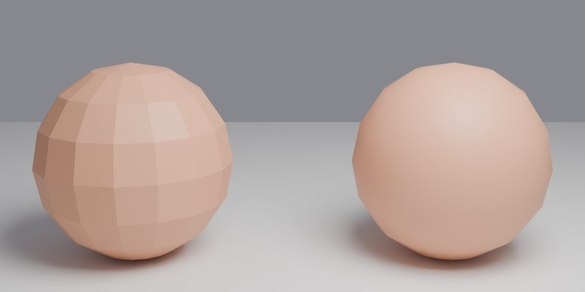

Bonus lesson
Shade Smooth and Shade Flat
A low-detail sphere looks like a faceted ball. One command makes the surface look smooth, without adding any geometry.
1. Add a sphere
Hover over the Viewport and press Shift + A, then choose Mesh > UV Sphere. In the panel that appears at the bottom left, lower Segments to 16 and Rings to 8 so the flat faces are easy to see.
2. Shade Smooth
With the sphere selected, open the Object menu at the top of the Viewport and choose Shade Smooth. The faces still exist, but Blender now blends the light across them, so the surface looks round.
3. Shade Flat
To go back, choose Object > Shade Flat. Every face is lit on its own again, so you see each one.

Why the outline is still blocky
Shade Smooth only changes how light is calculated. It does not change the shape. Look at the edge of the right sphere in the picture: the outline still has corners. For a rounder shape you need more segments, or a modifier such as Subdivision Surface (not covered in these lessons).
Shade Auto Smooth
The same Object menu has Shade Auto Smooth. It adds a Smooth by Angle modifier that keeps sharp edges sharp and smooths the gentle ones, which suits objects like the mug that mix curved and flat parts. The Blender manual notes that Shade Smooth also removes a Smooth by Angle modifier from the object. Read more in the Blender manual page on shading.
Exercise
Apply Shade Smooth to the mug body from Lessons 8 to 10 and render it again. Then try Shade Auto Smooth and compare the edges.